Ein Souvenir fürs Leben: Die Nacht nach dem Derby war lang – die Flu-Fans feierten bis nach Mitternacht vor ihrer Stammkneipe. Mittags dann ein Souvenir, das bleibt: ein Cristo Redentor als Tattoo auf dem Oberarm.
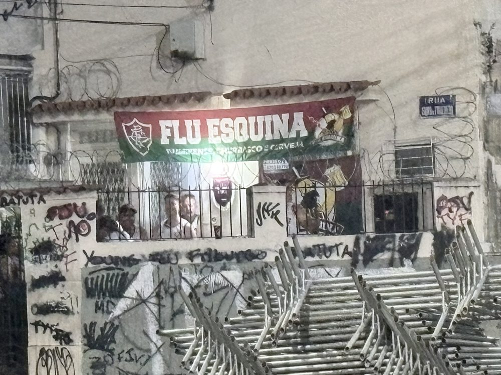
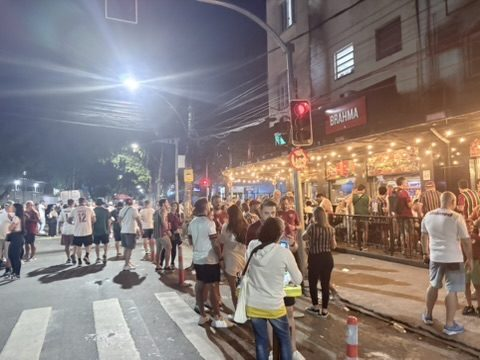
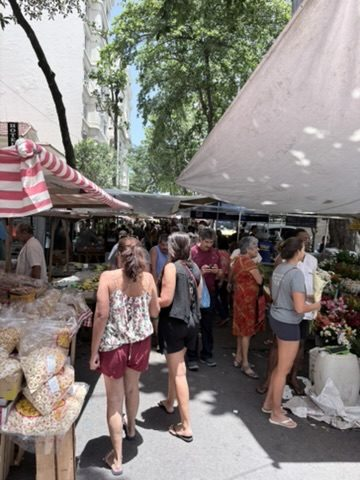
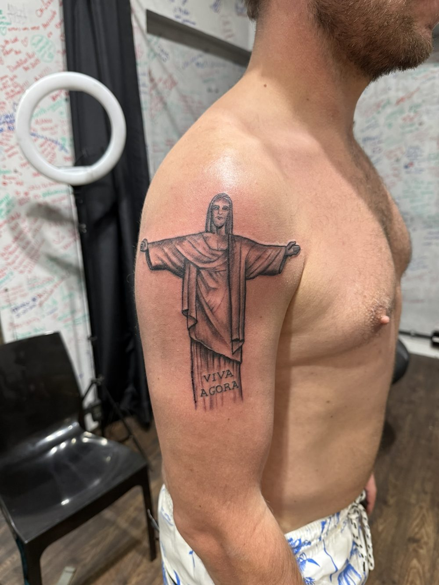
Centro am Feiertag: Der 20. November ist der Dia da Consciência Negra, seit 2024 landesweiter Feiertag in Erinnerung an Zumbi dos Palmares, Anführer der größten Quilombo-Gemeinschaft entflohener Sklaven. Die Innenstadt ist voller Menschen, in der Altstadt spielen Bands auf der Straße. Am Abend leuchtet die Igreja da Candelária in der Dämmerung.
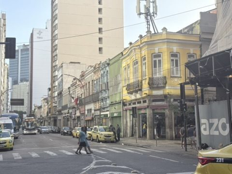
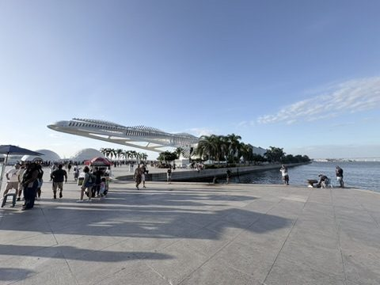
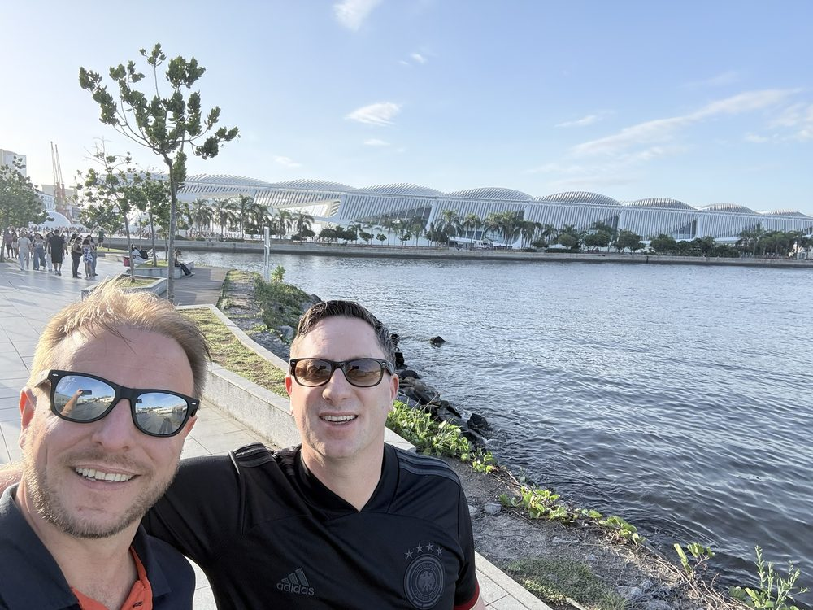
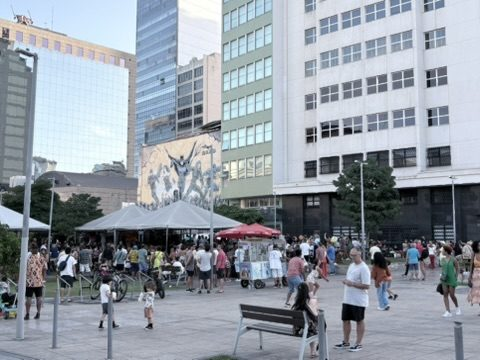
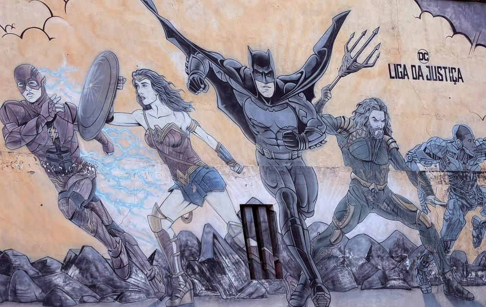
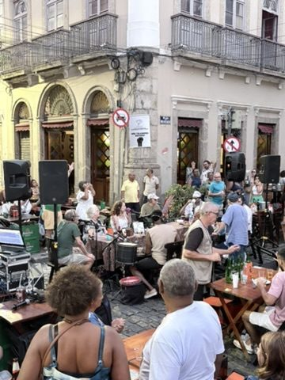
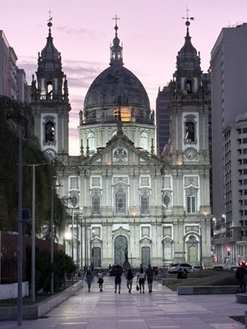
Porto Maravilha: Das alte Hafenviertel wurde vor den Olympischen Spielen 2016 komplett umgebaut. Wahrzeichen ist das Museu do Amanhã von Santiago Calatrava (2015), dessen weiße Rippenkonstruktion wie ein Skelett in die Bucht ragt. Daneben erinnert ein alter Hafenkran „Made in Germany" an die Vergangenheit.
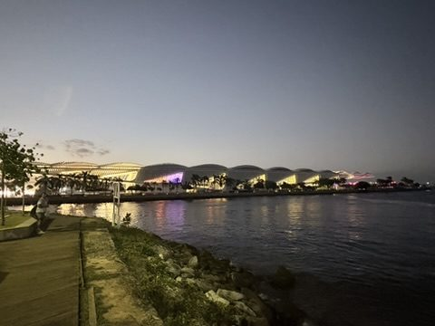
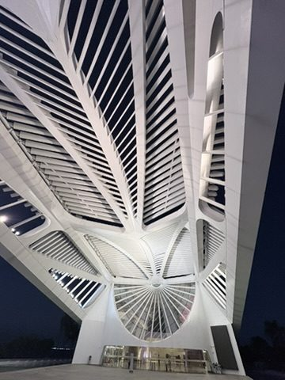
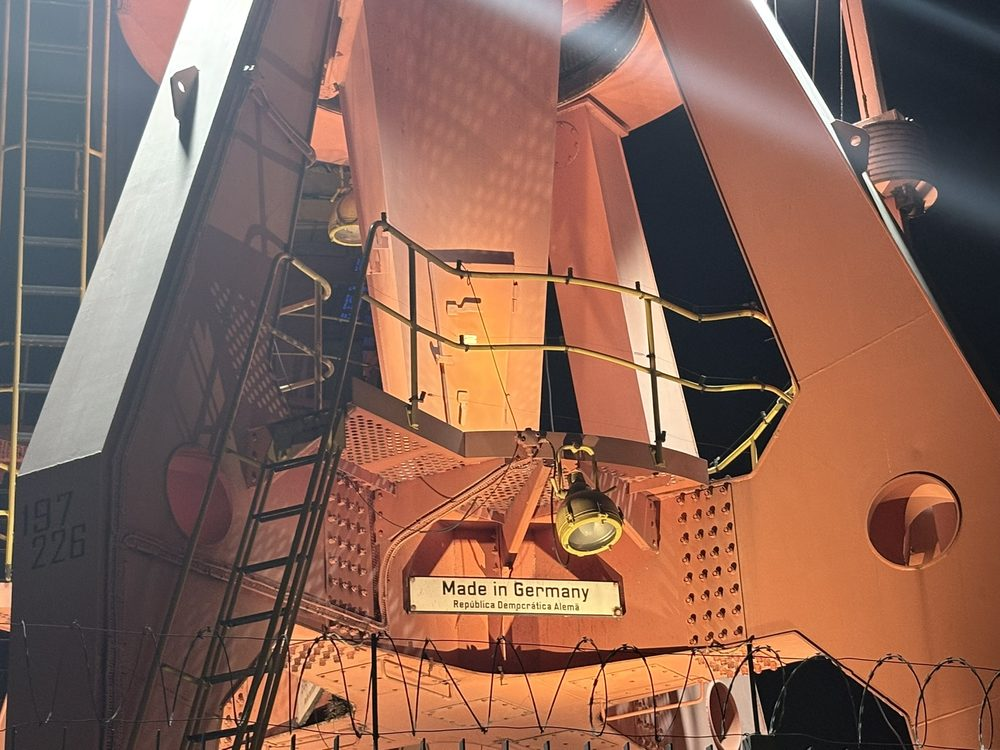